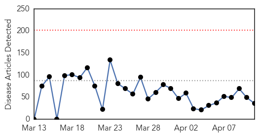
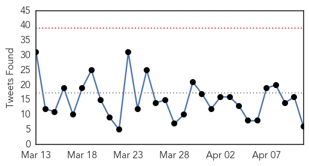
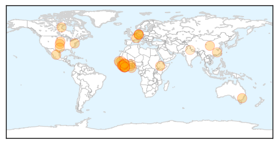
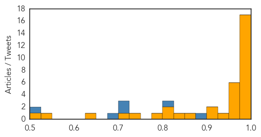
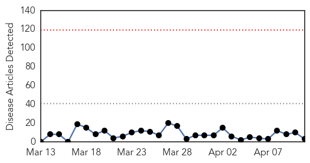
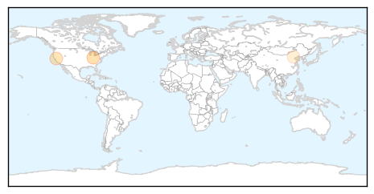
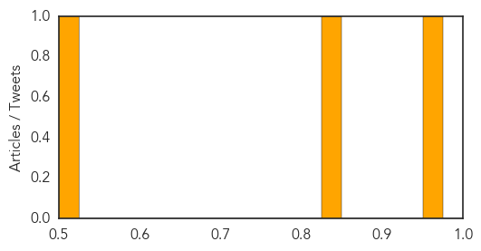

Ebola
30-Day Web Trend
0 alerts, 0 warnings

30-Day Twitter Trend
0 alerts, 0 warnings

Article Locations
Article Confidences
Top Articles:
- 0.999
- Woman isolated for possible Ebola
- 0.999
- Empty Ebola Clinics in Liberia Are Seen as Misstep in U.S. Relief Effort
- 0.998
- Ebola outbreak still a global emergency despite significant drop in cases, says UN health agency
- 0.998
- 'Progress' in Ebola Fight, but 'Substantial Risks' Remain — Naharnet
- 0.998
- Canada's Chief Public Health Officer to visit West Africa
- 0.997
- Half of Ebola cases located on Sierra Leone-Guinea border — WHO
- 0.997
- Ebola still a global public health emergency
- 0.993
- Health Ministry inspects Tema General Hospital Ebola centre
- 0.992
- 101 Ethiopian Medical personnel in the fight against Ebola in Sierra Leone
- 0.990
- Write off debts of most Ebola affected countries – Mahama
- 0.990
- President Mahama calls for debt cancellation for Ebola countries
- 0.989
- Canada's top doc heads to Sierra Leone, Guinea to tour Ebola response efforts
- 0.989
- Canada's top doc heads to Sierra Leone, Guinea to tour Ebola response efforts
- 0.985
- Statement on the 5th meeting of the IHR Emergency Committee regarding the Ebola outbreak in West Africa
- 0.984
- WHO: Ebola survivors at risk of eye and joint problems - Panorama
- 0.984
- Statement on the 5th meeting of the IHR Emergency Committee regarding the Ebola outbreak in West Africa
- 0.977
- When panic is the greater harm
- 0.973
- Scientists Find Potential Ebola Drug Target in Breakthrough Study
- 0.962
- Canada's Chief Public Health Officer to visit Ebola treatment centres in West Af
- 0.960
- The Daily Advance
- 0.959
- Ghanaian volunteers working in worst hit Ebola countries to be honoured
- 0.958
- Ghana to honor volunteers serving in Ebola-hit countries
- 0.957
- Ghana to honor volunteers serving in Ebola-hit countries - Xinhua
- 0.936
- Due to Ebola Impact West African Economies Set to Lose Us$3.6 Billion Annually « Awoko Newspaper
- 0.923
- Ebola volunteers in Ghana to receive state honours – Mahama
- 0.921
- Welcome to the Expotimes News
- 0.871
- Dead or Alive?
- 0.826
- Liberia: WHO Donates Vehicles to Ministry of Health to Enhance Mobility and Outreach
- 0.814
- Ghana to honour forty-five Ebola volunteers
- 0.809
- Ghanaian urges donors to cancel debt of Ebola-hit countries
- 0.778
- Ebola Survivors in Liberia Struggle to Cope
- 0.734
- ‘That’s How Small My Faith Was': Amber Brantly to Share Missionary Experience
- 0.722
- Senegalese In Le88m Fraud
- 0.626
- India offers support to make SAARC polio free
- 0.531
- The Private Sector and Sierra Leone’s Economic Regeneration « Awoko Newspaper
- 0.517
- ‘Fearless’ Ebola nurse from Liberia now training at Emory University
Top Tweets:
- 0.886
- Asheville medical officer helps battle Ebola outbreak - Asheville Citizen-Times http://t.co/t2etoEKtl3 ebola EVD
- 0.825
- Survivor guilt: Former Ebola patients struggle with virus' legacy - Al Jazeera America http://t.co/BBFHwhdLNZ ebola EVD
- 0.722
- Ebola vaccine worked in monkeys; potential drug target found - Medical News Today http://t.co/POYsevFnEA ebola EVD
- 0.703
- UN: Ebola still global emergency despite big drop in cases - Bradford Era http://t.co/zhvhmQhrye ebola EVD
- 0.678
- Ebola Workers No Longer Shunned Now Celebrated - WOWT http://t.co/PDR7RacHfD ebola EVD
- 0.518
- Idle Ebola Clinics in Liberia Are Seen as Misstep in US Relief Effort - New York Times http://t.co/qM6baUyZ7O ebola EVD
Measles
30-Day Web Trend
0 alerts, 0 warnings

30-Day Twitter Trend
1 alerts, 0 warnings

Article Locations
Article Confidences
Top Articles:
Top Tweets:
-
No tweets found for Apr 11, 2015